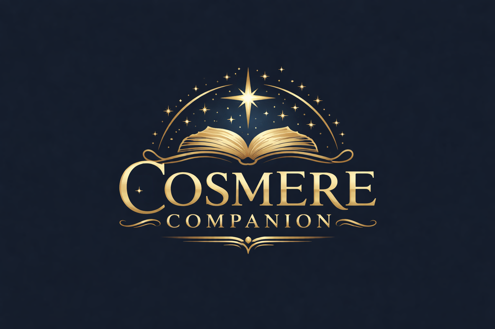
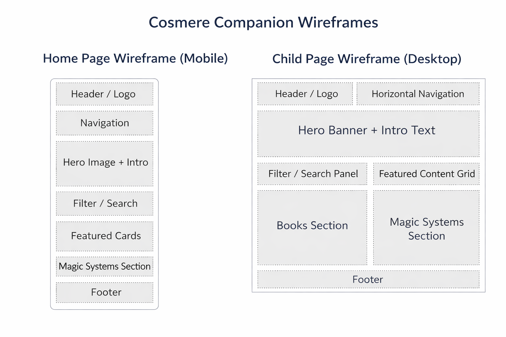

Site Name
Cosmere Companion
This name was chosen because the site is designed to be a helpful companion for readers exploring Brandon Sanderson’s Cosmere universe. It is short, clear, and directly connected to the fantasy book content the site will focus on.
Optional domain idea: cosmerecompanion.com
Site Purpose
Cosmere Companion is a fan-focused website created to help readers learn about the books, worlds, and magic systems found in Brandon Sanderson’s Cosmere. The site will organize important information in a simple and visually appealing way so that both new readers and longtime fans can explore the universe more easily.
Audience
The intended audience is fantasy readers, especially people who are interested in Brandon Sanderson’s books. This includes beginners who want help choosing where to start, as well as existing fans who want a clean reference page for comparing worlds, books, and magic systems.
Dynamic Elements
JavaScript will be used to make the site interactive and organized. The main content will be stored in arrays of objects that include data about books, worlds, and magic systems. JavaScript will then generate cards on the page, filter content by category, and respond to user actions like button clicks or search input.
The site will use DOM interaction to select elements, update displayed content, and react to events.
It will include multiple functions, conditional logic, arrays, objects, and array methods such as
forEach(), filter(), and map(). For example, users may be able
to filter books by series, show only specific magic systems, or display more details when a card is
clicked.
Logo
The logo will feature the site name, Cosmere Companion, with a fantasy-inspired style. It may include a simple icon such as a star, book, or symbolic magical design to match the theme of the Cosmere. The logo should feel clean, readable, and imaginative without being too cluttered.

Color Schema
#1B263B
Primary background / headings#415A77
Buttons / accents#E0E1DD
Page background / contrast areas#C7D3DD
Borders / secondary backgrounds#D4A017
Highlight accentTypography
Heading Font: Cinzel, serif
Cinzel gives the site a dramatic and fantasy-inspired look that works well for book and world-building content.
Body Font: Open Sans, sans-serif
Open Sans is easy to read on both desktop and mobile screens, making it a good choice for paragraphs, labels, buttons, and navigation.
Content
Home Page
Welcome to Cosmere Companion, a guide for readers exploring Brandon Sanderson’s connected fantasy universe. Whether you are just starting with Mistborn or diving deep into The Stormlight Archive, this site will help you learn about the books, worlds, and magic systems of the Cosmere.
Featured Books Section
The site will highlight major Cosmere series, including Mistborn, The Stormlight Archive, Elantris, Warbreaker, and Tress of the Emerald Sea. Each book or series card will include a title, a short description, and a category or world.
Magic Systems Section
This section will explain important magic systems such as Allomancy, Feruchemy, Hemalurgy, Surgebinding, Awakening, and AonDor. Each entry will summarize how the system works and which books it belongs to.
Reading Guide Section
A beginner-friendly reading guide will help visitors choose a starting point. It may suggest books based on interests like action, mystery, worldbuilding, or character growth.
Images and Media
The site will include a logo, a hero image or banner, and fantasy-themed images related to reading, books, or symbolic artwork inspired by the Cosmere. Images will support the content and improve the visual design.
Planned Pages
- Home: Introduction to the site and featured content
- Books: A collection of Cosmere books and series cards
- Magic Systems: Summaries of powers and how they work
- Reading Guide: Suggested starting points for different types of readers
Wireframes
Home Page Wireframe (Mobile)
Child Page Wireframe (Desktop - Books Page Example)
Wireframe Image
